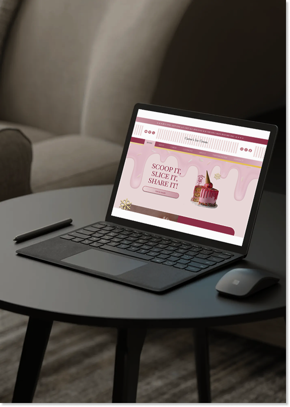

Edition 1: Behind the Screen

EMMAGAZINE
EDITION: 1
CARTER'S ICE CREAM
Redesigned a local shop's website to match its brand and personality.
EM-MAGAZINE
Designed a magazine inspired by my creativity and personal style.
UNO FOR BUSINESS
Redesigned UNO to teach key ideas from Service Design for Business.
BEHIND THE SCREEN
A collection of digital design projects exploring branding, web, and interactive media.